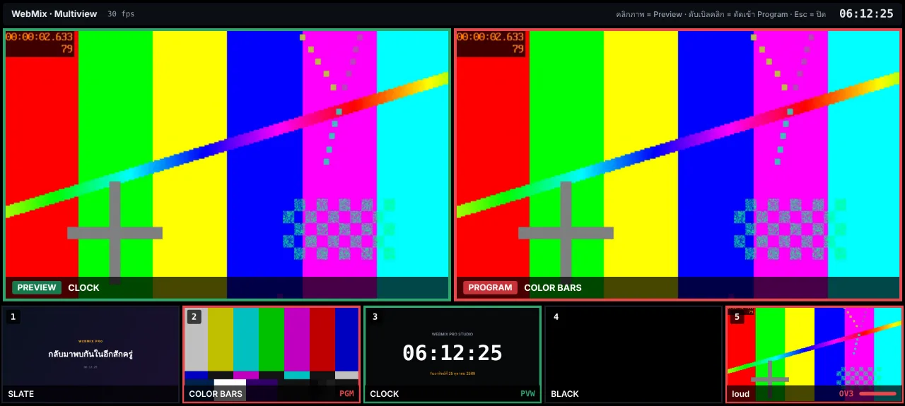
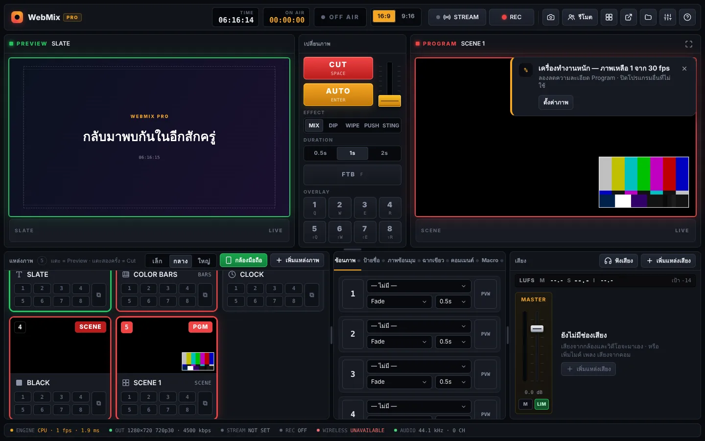
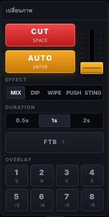
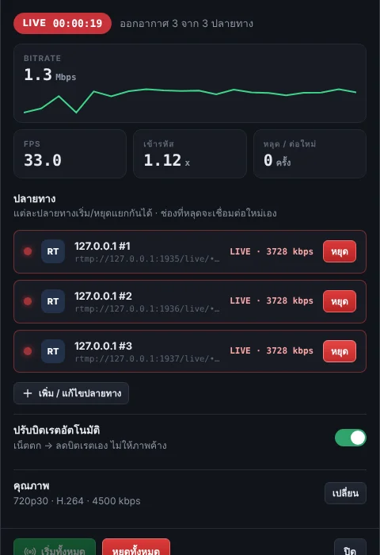
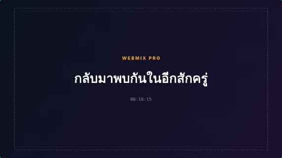
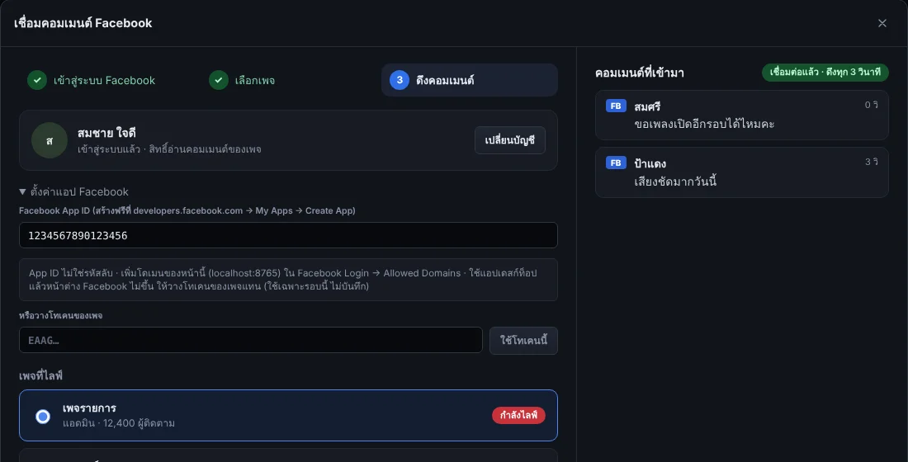
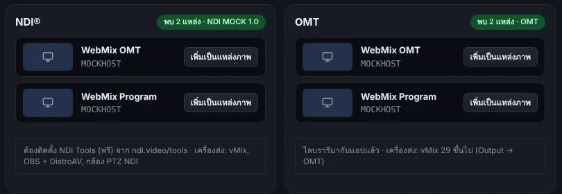
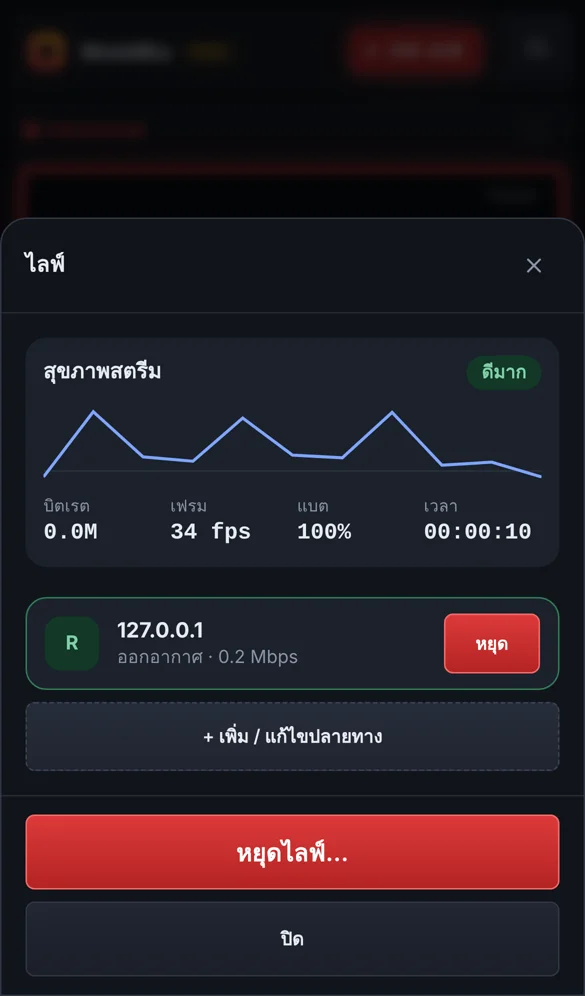

เห็นทุกกล้องในจอเดียว
เปิด Multiview ไปไว้จอที่สอง มีไฟ tally บอกว่ากล้องไหนออกอากาศ คลิกเลือก ดับเบิลคลิกตัดเข้า

สลับกล้อง ซ้อนกราฟิก มิกซ์เสียง บันทึก และไลฟ์ไปหลายแพลตฟอร์มพร้อมกัน จากคอมพิวเตอร์หรือมือถือเครื่องเดียว ไม่ต้องเช่าเซิร์ฟเวอร์
Windows · macOS · Linux · Android · เว็บเบราว์เซอร์

ไลฟ์ออกไปได้ทุกที่ที่ผู้ชมของคุณอยู่
ออกแบบให้ทำงานแบบห้องส่งจริง เตรียมภาพไว้ที่ Preview แล้วตัดขึ้น Program แต่ใช้ง่ายพอให้คนเดียวคุมได้ทั้งรายการ
เปิด Multiview ไปไว้จอที่สอง มีไฟ tally บอกว่ากล้องไหนออกอากาศ คลิกเลือก ดับเบิลคลิกตัดเข้า

CUT, AUTO และทรานซิชัน 5 แบบ รวม Stinger จากวิดีโอของคุณเอง ต่อแผงปุ่ม MIDI ได้

เริ่มหรือหยุดทีละช่องได้ เน็ตตกก็ลดบิตเรตและต่อใหม่ให้เอง

ฟังเสียงพูดแล้วขึ้นตัวหนังสือบนจอ พร้อมคำแปลภาษาอังกฤษ จีน ญี่ปุ่น เกาหลี และอื่น ๆ ดาวน์โหลดเป็นไฟล์ .srt ได้

PROGRAMรวมคอมเมนต์จาก YouTube, Twitch และเพจ Facebook ไว้ที่เดียว กดเลือกแล้วขึ้นจอเป็นการ์ดทันที

กล้อง USB มือถือเป็นกล้องไร้สาย แขกรับเชิญผ่านลิงก์ และค้นหา NDI กับ OMT ในวงแลนให้อัตโนมัติ

แอป Android มีตัวส่งสตรีมและ ffmpeg อยู่ในตัว เข้ารหัสด้วยชิปของเครื่องเอง ไม่ต้องพึ่งคอมพิวเตอร์หรือเซิร์ฟเวอร์

เลือกกล้อง สแกน QR ให้มือถือเป็นกล้อง หรือเพิ่มภาพ วิดีโอ สไลด์ PDF และกราฟิก
วางรหัสสตรีมของแต่ละแพลตฟอร์ม กดทดสอบเพื่อตรวจการเชื่อมต่อโดยผู้ชมยังไม่เห็น
แอปตรวจความพร้อมครั้งสุดท้าย นับถอยหลัง 3–2–1 แล้วออกอากาศพร้อมกันทุกช่อง
ตัวเข้ารหัสภาพล่มกลางรายการ แอปเริ่มตัวใหม่เองภายในไม่กี่วินาทีโดยไม่ต้องเชื่อมต่อใหม่ และเปลี่ยนไปใช้ CPU เมื่อชิปของเครื่องล่มซ้ำ
ช่องที่หลุดระหว่างไลฟ์กลับมาออกอากาศในราว 5 วินาที จากเดิมราว 9 วินาที ช่องอื่นไม่สะดุด
ตรวจรหัสสตรีมทุกปลายทางโดยไม่ส่งภาพ และซ้อม 30 วินาทีเพื่อวัดความเร็วอัปโหลด
บอกเวลาที่ยังบันทึกได้ หยุดไฟล์แยกกล้องให้เอง และปิดไฟล์หลักให้เรียบร้อยก่อนเต็ม
เลือกเพจที่กำลังไลฟ์ แล้วคอมเมนต์เข้าแชตพร้อม YouTube และ Twitch
แสดงต้นฉบับคู่คำแปล ใช้ตัวแปลในตัวของ Chrome ข้อความไม่ออกนอกเครื่อง
แท็บใหม่ในหน้าตั้งค่า ค้นหาทั้งสองแบบพร้อมกันและเพิ่มเป็นแหล่งภาพได้ทันที
แอปคอมพิวเตอร์อัปเดตตัวเอง Android บอกลิงก์ APK ตรงรุ่นเครื่อง เว็บแจ้งให้โหลดหน้าใหม่
เวอร์ชัน 1.1.14 · 28 ต.ค. 2569 · ติดตั้งครั้งเดียว ครั้งต่อไปแอปแจ้งและอัปเดตตัวเอง
Windows 10 / 11 · 64 บิต
macOS 11 ขึ้นไป · ชิป Apple และ Intel
64 บิต · แพ็กเกจติดตั้ง ffmpeg ให้เอง
Android 7 ขึ้นไป · ไลฟ์ได้ในตัว
winget install ffmpeg หรือ brew install ffmpeg ถ้าบันทึกอย่างเดียวไม่ต้องใช้